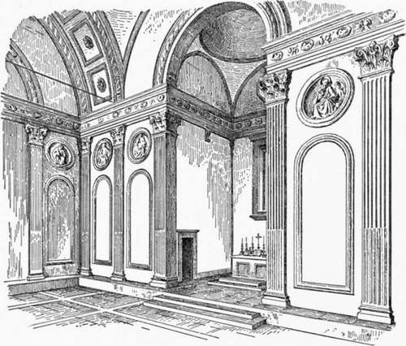

Chapter III. Church Architecture Of The Florentine Renaissance
Description
This section is from the book "Character Of Renaissance Architecture", by Charles Herbert Moore. Also available from Amazon: Character of Renaissance Architecture.
Chapter III. Church Architecture Of The Florentine Renaissance
No other work by Brunelleschi is comparable in merit to the great dome of the cathedral. None of his other opportunities were such as to call forth his best powers, which appear to have required great magnitude to bring them into full play. In his other works the influence of his Roman studies is more manifest, and his own genius is less apparent. In these other works he revives the use of the orders, and employs them in modes which for incongruity surpass anything that imperial Roman taste had devised.
The first of these works is the small chapel of the Pazzi in the cloister of Santa Croce. It is a simple rectangle on plan (Fig. 10), with a square sanctuary on the short axis, and a porch across the front. The central area is covered with a circular vault which by most writers is called a dome, but it is not a dome; it is a vault of essentially Gothic form, like two early Gothic apse vaults joined together (Fig. 11). It rests on pendentives, and is enclosed by a cylindrical drum, which forms an effective, though not a logical, abutment to its thrusts, and is covered with a low-pitched roof of masonry having a slightly curved outline. Whether this external covering is connected with the vaulting in any way above where it parts from the crowns of the vault cells it is impossible to discover, because there is no way of access to the open space between the two parts. Through a small opening in the outer shell, near its crown, the hand may be thrust into the void, but nothing can be reached. It is a curious form of double vault, and differs fundamentally from the great double dome of the cathedral. The scheme as a whole is structurally inconsistent; for while the inner vault has the concentrated thrusts of Gothic construction, these thrusts are met by the enclosing drum, and not by the isolated abutments that the vault logically calls for. The sanctuary has a small hemispherical dome on pendentives, and the portico is covered with a barrel vault bisected by another small dome on pendentives.
Fig. 10. — Plan of the chapel of the Pazzi.
Fig. 11.— Section of vault of the Pazzi chapel.
The architectural treatment of the interior (Fig. 12) exhibits a wide departure from that of any previous type of design. The form of the building is mediaeval, being, with exception of the central vault, essentially Byzantine,1 but the details are classic Roman, and consist of a shallow order of fluted Corinthian pilasters with the entablature at the level of the vaulting imposts. In such a building, however, and used in this way, a classic order is out of place; for an order is a structural system designed for structural use, but the order here has no more structural function than if it were merely painted on the walls. It is used, of course, with a purely ornamental motive, but as ornament it is inappropriate. A proper ornamental treatment of such an interior would be either by marble incrusting, mosaic, or fresco, or else by pilaster strips, or colonnettes, and blind arches, which would break the monotony of the broad wall surfaces without suggesting an architectural system foreign to the character of the building. Such arcading would have an appropriate structural suggestiveness, if not an actual structural use; but a classic order is unsuitable for a building of mediaeval character. The mediaeval pilaster strip and blind arcade were designed for this use, and they have the further advantage that their proportions may be indefinitely varied to meet varied needs, as the proportions of the classic orders may not. But in their lack of a true sense of structural expression, and in their eagerness to revive the use of classic forms, the designers of the Renaissance failed to consider these things.
Fig. 12. — Interior of the Pazzi chapel.
A particularly awkward result of this improper use of an order is that the entablature passes through the arch imposts, making an irrational structural combination. This scheme was, however, extensively followed in the subsequent architecture of the Renaissance, but it is a barbarism for which no authority can, I believe, be found in ancient Roman design.2 The nearest approach to it in Roman art is the entablature block resting on the capital (as in the great hall of the Baths of Caracalla), which was a blundering device of the later Roman architects. The complete entablature running through the impost, as in the chapel of the Pazzi, sometimes, indeed, occurs in the early churches of Rome and elsewhere,1 as a result of unsettled conditions of design, while the architects were struggling with the traditional use of the entablature and the introduction of the arch sprung from the columns. But after the admirable logic of the mediaeval arched systems of construction had been reached it appears strange that any designer should go back to this irrational combination.
1 The term "Byzantine" is often applied loosely to buildings in which only the ornamental details have a Byzantine character. But the primary and distinguishing structural feature of Byzantine architecture is the dome on pendentives. The Byzantine features of the Pazzi are involved with others derived from different systems, but they are very distinct. The central vault, though of Gothic form, is supported on pendentives, and the true dome on pendentives occurs, as we have seen, in the sanctuary and the porch.
2 The entablature does, however, occur under vaulting in some provincial Roman buildings, as in the Pantheon of Paalbek, where it forms the wall cornice from which the vaulting springs. But this, though not defensible, is less objectionable than the Renaissance scheme of an entablature passing through the imposts of archivolts.
Continue to:
- prev: The Dome Of Florence. Part 5
- Table of Contents
- next: Church Architecture Of The Florentine Renaissance. Part 2